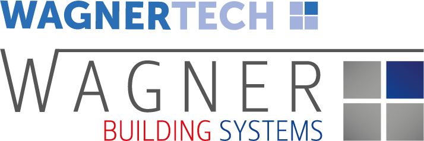

<!doctype html>
<html lang="de">
  <head>
    <meta charset="UTF-8" />
    <meta name="viewport" content="width=device-width, initial-scale=1.0" />
    <title>Trivialmessung – EN 16211 / DIN EN 12599 (Rund & Rechteck)</title>
    <script src="https://unpkg.com/react@18/umd/react.development.js" crossorigin></script>
    <script src="https://unpkg.com/react-dom@18/umd/react-dom.development.js" crossorigin></script>
    <script src="https://unpkg.com/@babel/standalone/babel.min.js"></script>
    <script src="https://cdn.tailwindcss.com"></script>
    <script src="https://cdnjs.cloudflare.com/ajax/libs/html2canvas/1.4.1/html2canvas.min.js" crossorigin="anonymous" referrerpolicy="no-referrer"></script>
    <script src="https://cdnjs.cloudflare.com/ajax/libs/jspdf/2.5.1/jspdf.umd.min.js" crossorigin="anonymous" referrerpolicy="no-referrer"></script>
    <style>
      .export-clone { font-size: 14px; line-height: 1.4; color: #000; }
      .export-clone table { border-collapse: collapse; width: 100%; }
      .export-clone th, .export-clone td { border: 1px solid #555; padding: 6px 8px; }
      .export-clone thead th { background: #eaeaea; font-weight: 700; }
      .badge { border-radius: 9999px; padding: 2px 8px; font-size: 12px; font-weight: 600; }
    </style>
  </head>
  <body class="bg-neutral-50 text-neutral-900">
    <div id="root"></div>

    <script type="text/babel">
      const { useState, useEffect } = React;
      const nf2 = new Intl.NumberFormat(undefined, { maximumFractionDigits: 2 });
      const nf3 = new Intl.NumberFormat(undefined, { maximumFractionDigits: 3 });
      const nf4 = new Intl.NumberFormat(undefined, { maximumFractionDigits: 4 });

      function toNumber(v, fallback = NaN) {
        if (v === "" || v === null || v === undefined) return fallback;
        const n = Number(String(v).replace(",", "."));
        return Number.isFinite(n) ? n : fallback;
      }

      function cloneForExport(node) {
        const clone = node.cloneNode(true);
        // Inputs in statische Spans umwandeln
        const inputs = clone.querySelectorAll('input');
        inputs.forEach((inp) => {
          const span = document.createElement('span');
          span.textContent = inp.value || ' ';
          span.style.display = 'inline-block';
          span.style.minWidth = (inp.offsetWidth || 70) + 'px';
          span.style.padding = '6px 8px';
          span.style.border = '1px solid #555';
          span.style.borderRadius = '4px';
          span.style.background = '#fff';
          span.style.textAlign = 'center';
          inp.parentNode.replaceChild(span, inp);
        });
        // Tabellenrahmen erzwingen
        clone.querySelectorAll('table').forEach(t => {
          t.style.borderCollapse = 'collapse';
          t.querySelectorAll('th,td').forEach(c => { c.style.border = '1px solid #555'; c.style.padding = '6px 8px'; });
          const thead = t.querySelector('thead');
          if (thead) thead.querySelectorAll('th').forEach(th => { th.style.background = '#eaeaea'; th.style.fontWeight = '700'; });
        });
        return clone;
      }

      // ===== PDF-Export: Logo/Brandbar mit ins PDF, Dateiname = Messpunkt =====
      async function exportDivToPDF(divId, filenameBase = "Messprotokoll", landscape=false) {
        const reportEl = document.getElementById(divId);
        const brandbar = document.getElementById("brandbar")?.cloneNode(true);

        const wrapper = document.createElement('div');
        wrapper.className = 'export-clone';

        if (brandbar) {
          wrapper.appendChild(brandbar);

      // Messpunktbezeichnung unter dem Logo anzeigen
        const titleDiv = document.createElement("div");
        titleDiv.style.textAlign = "left";
        titleDiv.style.margin = "12px 0 8px 0";
        titleDiv.style.fontSize = "16px";
        titleDiv.style.fontWeight = "600";
        titleDiv.textContent = filenameBase ? `Messpunkt: ${filenameBase}` : "";
          wrapper.appendChild(titleDiv);
      }

        const cloned = cloneForExport(reportEl);
        wrapper.appendChild(cloned);

        document.body.appendChild(wrapper);

        const scale = 3;
        const canvas = await html2canvas(wrapper, {
          scale,
          backgroundColor: "#ffffff",
          useCORS: true,
          letterRendering: true
        });

        document.body.removeChild(wrapper);

        const pdf = new jspdf.jsPDF({
          unit: "mm",
          format: "a4",
          orientation: landscape ? "landscape" : "portrait"
        });
        const pageWidth = pdf.internal.pageSize.getWidth();
        const pageHeight = pdf.internal.pageSize.getHeight();
        const margin = 10;
        const imgWidth = pageWidth - margin*2;
        const s = imgWidth / canvas.width;
        const pageHeightPx = (pageHeight - margin*2) / s;

        let yOffset = 0;
        let page = 0;
        while (yOffset < canvas.height) {
          const pageCanvas = document.createElement("canvas");
          pageCanvas.width = canvas.width;
          pageCanvas.height = Math.min(pageHeightPx, canvas.height - yOffset);
          const ctx = pageCanvas.getContext("2d");
          ctx.drawImage(canvas, 0, yOffset, canvas.width, pageCanvas.height, 0, 0, pageCanvas.width, pageCanvas.height);
          const imgData = pageCanvas.toDataURL("image/png");
          if (page > 0) pdf.addPage();
          pdf.addImage(imgData, "PNG", margin, margin, imgWidth, pageCanvas.height * s);
          yOffset += pageHeightPx;
          page += 1;
        }

        const base = (filenameBase || "Messprotokoll").trim().replace(/\s+/g, "_");
        const suffix = landscape ? "_quer" : "_hoch";
        pdf.save(`${base}${suffix}.pdf`);
      }

      const TOL = 10;
      const devStatus = (d) => (Number.isFinite(d) ? (Math.abs(d) <= TOL ? "ok" : "nok") : "na");
      const cellClass = (val) => {
        const n = toNumber(val);
        if (Number.isFinite(n)) return "bg-blue-50 border-blue-300 focus:ring-blue-300";
        if (val === "" || val === undefined) return "bg-white border-neutral-300 focus:ring-neutral-300";
        return "bg-red-50 border-red-300 focus:ring-red-300";
      };

      // Einstecktiefen
      function ringDepthsCm(dmm, rings) {
        const d_m = Number(toNumber(dmm, 0)) / 1000;
        const R = d_m / 2;
        const out = [];
        for (let i=0; i<rings; i++) {
          const rmid = R * Math.sqrt((i + 0.5) / rings);
          const depth_m = Math.max(R - rmid, 0);
          out.push(depth_m * 100);
        }
        return out;
      }
      function rectDepthsCm(length_mm, count) {
        const Lcm = Number(toNumber(length_mm, 0)) / 10;
        return Array.from({length: count}, (_,i)=> Lcm * ((i+0.5)/count));
      }

      function ProbeScale({ depthsCm, title="Einstecktiefe" }) {
        const width = 140, height = 280, pad = 24;
        const maxDepth = Math.max(...depthsCm, 0);
        const maxScale = Math.ceil(maxDepth + 0.1);
        const pixelsPerCm = (height - 2*pad) / (maxScale || 1);
        return (
          <svg width={width} height={height} className="rounded-xl shadow bg-white">
            <rect x="0" y="0" width={width} height={height} rx="12" fill="#fff" />
            <text x={width/2} y="16" textAnchor="middle" fontSize="12" fontWeight="600">{title}</text>
            <text x={width/2 + 18} y="28" fontSize="10" fill="#111827">0 cm</text>
            <rect x={width/2 - 6} y={pad-4} width="12" height={height-2*pad+8} rx="6" fill="#1f2937" />
            {Array.from({length: maxScale+1}).map((_, cm)=>{
              const y = pad + cm * pixelsPerCm;
              const long = cm % 5 === 0;
              return (
                <g key={cm}>
                  <line x1={width/2 + 8} y1={y} x2={width/2 + (long?28:18)} y2={y} stroke="#111827" strokeWidth="1"/>
                  {long && <text x={width/2 + 32} y={y+4} fontSize="10" fill="#111827">{cm} cm</text>}
                </g>
              );
            })}
            {depthsCm.map((cm, idx)=>{
              const y = pad + cm * pixelsPerCm;
              const label = `R${idx+1}: ${cm.toFixed(1)} cm`;
              const pillW = Math.max(56, 8 + label.length * 6);
              const pillH = 16;
              return (
                <g key={idx}>
                  <circle cx={width/2 - 12} cy={y} r="5" fill="#ef4444" />
                  <rect x="8" y={y - pillH + 2} width={pillW} height={pillH} rx="8" fill="#fff" stroke="#ef4444" />
                  <text x="12" y={y+2} fontSize="11" fill="#ef4444">{label}</text>
                </g>
              );
            })}
          </svg>
        );
      }

      // Raster-Vorschläge
      function gridSuggestionRound(dmm) {
        if (dmm <= 250) return { rings: 2, sectors: 3, points: 6 };
        if (dmm <= 500) return { rings: 3, sectors: 4, points: 12 };
        if (dmm <= 1000) return { rings: 4, sectors: 5, points: 20 };
        return { rings: 5, sectors: 6, points: 30 };
      }
      function gridSuggestionRect(bmm, hmm) {
        const maxEdge = Math.max(bmm, hmm);
        if (maxEdge <= 400) return { rows: 3, cols: 3, points: 9 };
        if (maxEdge <= 800) return { rows: 4, cols: 4, points: 16 };
        return { rows: 5, cols: 5, points: 25 };
      }

      // Infografiken
      function PolarInfographic({ rings, sectors }) {
        const W = 260, H = 260, R = 110, cx = W/2, cy = H/2;
        const radii = Array.from({length: rings}, (_,i)=> R * (i+1)/rings);
        const angles = Array.from({length: sectors}, (_,j)=> (j * 2*Math.PI)/sectors);
        const pts = [];
        for (let i=0;i<rings;i++){
          for (let j=0;j<sectors;j++){
            const r0=i===0?0:radii[i-1], r1=radii[i], rm=(r0+r1)/2;
            const a0=angles[j], a1=(j+1<sectors)?angles[j+1]:2*Math.PI, am=(a0+a1)/2;
            pts.push({x:cx+rm*Math.cos(am), y:cy+rm*Math.sin(am)});
          }
        }
        return (
          <svg width={W} height={H} className="rounded-xl shadow bg-white">
            <rect x="0" y="0" width={W} height={H} rx="12" fill="#f8fbff"/>
            <circle cx={cx} cy={cy} r={R} fill="none" stroke="#2e6ee6" strokeWidth="2"/>
            {radii.slice(0,-1).map((r,idx)=>(<circle key={idx} cx={cx} cy={cy} r={r} fill="none" stroke="#9ec1ff" strokeDasharray="4 4"/>))}
            {angles.map((a,idx)=> <line key={idx} x1={cx} y1={cy} x2={cx+R*Math.cos(a)} y2={cy+R*Math.sin(a)} stroke="#9ec1ff" strokeDasharray="4 4"/>)}
            {pts.map((p,idx)=> <circle key={idx} cx={p.x} cy={p.y} r="4.5" fill="#ff7a45"/>)}
          </svg>
        );
      }
      function RectInfographic({ rows, cols }) {
        const W = 300, H = 220, pad = 20;
        const gx = (W - 2*pad) / cols;
        const gy = (H - 2*pad) / rows;
        const points = [];
        for (let i=0;i<rows;i++) for (let j=0;j<cols;j++){ const x=pad+(j+0.5)*gx, y=pad+(i+0.5)*gy; points.push({x,y}); }
        return (
          <svg width={W} height={H} className="rounded-xl shadow bg-white">
            <rect x="0" y="0" width={W} height={H} rx="12" fill="#f8fbff" />
            <rect x={pad} y={pad} width={W-2*pad} height={H-2*pad} fill="none" stroke="#2e6ee6" strokeWidth="2" />
            {Array.from({length: cols-1}).map((_,j)=>{ const x=pad+(j+1)*gx; return <line key={j} x1={x} y1={pad} x2={x} y2={H-pad} stroke="#9ec1ff" strokeDasharray="4 4"/>; })}
            {Array.from({length: rows-1}).map((_,i)=>{ const y=pad+(i+1)*gy; return <line key={i} x1={pad} y1={y} x2={W-pad} y2={y} stroke="#9ec1ff" strokeDasharray="4 4"/>; })}
            {points.map((p,idx)=> <circle key={idx} cx={p.x} cy={p.y} r="4.5" fill="#ff7a45"/>)}
          </svg>
        );
      }

      // ===== Tabs =====
      function RoundTab() {
        const [name, setName] = useState("");
        const [dmm, setDmm] = useState("315");
        const [plan, setPlan] = useState("650");
        const [rings, setRings] = useState(3);
        const [sectors, setSectors] = useState(4);
        const [cells, setCells] = useState(() => Array.from({ length: 6 }, () => Array.from({ length: 6 }, () => "")));

        useEffect(()=>{ const s=gridSuggestionRound(Number(toNumber(dmm,0))); setRings(s.rings); setSectors(s.sectors); },[dmm]);

        const d = Number(toNumber(dmm,0))/1000;
        const A = Math.PI*(d**2)/4;
        const Dh = d;
        const upLen=3*Dh, downLen=6*Dh;

        const active=cells.slice(0,rings).map(r=>r.slice(0,sectors));
        const vals=active.flat().map(v=>toNumber(v)).filter(Number.isFinite);
        const vAvg=vals.length?vals.reduce((a,b)=>a+b,0)/vals.length:0;
        const Vdot=vAvg*A*3600;
        const devPct= Number(toNumber(plan,NaN))>0 ? ((Vdot-Number(plan))/Number(plan))*100 : NaN;

        function setCell(i,j,v){ setCells(p=>{const n=p.map(r=>r.slice()); n[i][j]=v; return n;}); }

        return (<div className="space-y-4" id="round-section">
          <div className="grid lg:grid-cols-3 gap-6">
            <div className="bg-white rounded-2xl shadow p-4 space-y-4 lg:col-span-1">
              <div className="grid grid-cols-2 gap-3">
                <label className="text-sm col-span-2">Messpunkt / Bezeichnung
                  <input value={name} onChange={e=>setName(e.target.value)} className="mt-1 w-full rounded-xl border p-2 bg-yellow-50 border-yellow-300" placeholder="z. B. ZU-01, Flur EG"/>
                </label>
                <label className="text-sm">Durchmesser d [mm]
                  <input value={dmm} onChange={e=>setDmm(e.target.value)} className="mt-1 w-full rounded-xl border p-2 bg-blue-50 border-blue-300" inputMode="decimal"/>
                </label>
                <label className="text-sm">Planwert V̇ [m³/h]
                  <input value={plan} onChange={e=>setPlan(e.target.value)} className="mt-1 w-full rounded-xl border p-2 bg-blue-50 border-blue-300" inputMode="decimal"/>
                </label>
                <div className="text-sm">A [m²]
                  <div className="mt-1 py-2 px-3 rounded-xl bg-neutral-100">{nf4.format(A)}</div>
                </div>
                <div className="text-sm col-span-2">Dh [m]
                  <div className="mt-1 py-2 px-3 rounded-xl bg-neutral-100">{nf3.format(Dh)}</div>
                </div>
                <div className="text-sm">Upstream ≥ 3×Dh [m]
                  <div className="mt-1 py-2 px-3 rounded-xl bg-neutral-100">{nf2.format(upLen)}</div>
                </div>
                <div className="text-sm">Downstream ≥ 6×Dh [m]
                  <div className="mt-1 py-2 px-3 rounded-xl bg-neutral-100">{nf2.format(downLen)}</div>
                </div>
              </div>
            </div>
            <div className="bg-white rounded-2xl shadow p-4">
              <PolarInfographic rings={rings} sectors={sectors}/>
              <div className="text-sm mt-2 text-neutral-600">Orange Punkte = Messpositionen je Teilfläche • Gleich große Flächen → arithm. Mittelwert.</div>
            </div>
            <div className="bg-white rounded-2xl shadow p-4">
              <h4 className="font-semibold mb-2">Einstecktiefe (Rundkanal) – Testo-Sonde</h4>
              <ProbeScale depthsCm={ringDepthsCm(dmm, rings)} />
            </div>
          </div>

          <div className="bg-white rounded-2xl shadow p-4">
            <div className="flex items-center justify-between mb-3">
              <div>
                <h3 className="font-semibold text-lg">Messmatrix vᵢⱼ [m/s] (Ringe × Sektoren = {rings}×{sectors})</h3>
                <div className="text-xs text-neutral-500 mt-1">Toleranz gemäß DIN EN 12599 (Funktionsprüfung): ±{TOL} %</div>
              </div>
              <div className="flex gap-2">
                <button onClick={()=>exportDivToPDF('round-report', name, false)} className="px-3 py-2 rounded-xl border hover:bg-neutral-50">PDF Hoch</button>
                <button onClick={()=>exportDivToPDF('round-report', name, true)} className="px-3 py-2 rounded-xl border hover:bg-neutral-50">PDF Quer</button>
              </div>
            </div>
            <div id="round-report">
              <div className="overflow-auto">
                <table className="min-w-full border text-sm">
                  <thead className="bg-neutral-100">
                    <tr><th className="border px-2 py-1">Ring \\ Sektor</th>{Array.from({length: sectors}).map((_,j)=>(<th key={j} className="border px-2 py-1">S{j+1}</th>))}</tr>
                  </thead>
                  <tbody>
                    {Array.from({length: rings}).map((_,i)=>(
                      <tr key={i}>
                        <td className="border px-2 py-1 font-semibold">R{i+1}</td>
                        {Array.from({length: sectors}).map((_,j)=>(
                          <td key={j} className="border px-2 py-1">
                            <input value={cells[i][j] ?? ""} onChange={e=>setCell(i,j,e.target.value)} inputMode="decimal" className={`w-24 rounded border p-1 text-center ${cellClass(cells[i][j])}`} placeholder="v m/s"/>
                          </td>
                        ))}
                      </tr>
                    ))}
                  </tbody>
                </table>
              </div>
              <RoundResults vAvg={vAvg} Vdot={Vdot} devPct={devPct} />
            </div>
          </div>
        </div>);
      }

      function RoundResults({ vAvg, Vdot, devPct }) {
        const status = devStatus(devPct);
        const devBoxClass = status==="ok" ? "border border-green-200 bg-green-50" : (status==="nok" ? "border border-red-200 bg-red-50" : "border bg-neutral-50");
        const badgeClass = status==="ok" ? "badge bg-green-600 text-white" : (status==="nok" ? "badge bg-red-600 text-white" : "badge bg-neutral-400 text-white");
        return (
          <div className="grid md:grid-cols-3 gap-4 mt-3">
            <div className="rounded-xl p-3 border bg-sky-50 border-sky-200">
              <div className="text-xs text-sky-700">Mittelgeschwindigkeit</div>
              <div className="text-xl font-semibold text-sky-900">{nf2.format(vAvg)} m/s</div>
            </div>
            <div className="rounded-xl p-3 border bg-sky-50 border-sky-200">
              <div className="text-xs text-sky-700">Volumenstrom V̇</div>
              <div className="text-xl font-semibold text-sky-900">{nf2.format(Vdot)} m³/h</div>
            </div>
            <div className={`rounded-xl p-3 ${devBoxClass}`}>
              <div className="flex items-center justify-between">
                <div className="text-xs text-neutral-700">Abweichung zu Plan</div>
                <span className={badgeClass}>{status==="ok" ? "OK" : (status==="nok" ? "NICHT OK" : "—")}</span>
              </div>
              <div className="text-xl font-semibold">{Number.isFinite(devPct) ? `${nf2.format(devPct)} %` : "–"}</div>
              <div className="text-xs mt-1 text-neutral-600">Grenze: ±{TOL}%</div>
            </div>
          </div>
        );
      }

      function RectTab() {
        const [name, setName] = useState("");
        const [bmm, setBmm] = useState("400");
        const [hmm, setHmm] = useState("200");
        const [plan, setPlan] = useState("650");
        const [rows, setRows] = useState(3);
        const [cols, setCols] = useState(3);
        const [cells, setCells] = useState(() => Array.from({ length: 5 }, () => Array.from({ length: 5 }, () => "")));

        useEffect(()=>{ const s=gridSuggestionRect(Number(toNumber(bmm,0)),Number(toNumber(hmm,0))); setRows(s.rows); setCols(s.cols); },[bmm,hmm]);

        const b = Number(toNumber(bmm,0))/1000, h=Number(toNumber(hmm,0))/1000;
        const A = b*h;
        const Dh = (A===0)?0:(2*b*h)/(b+h);
        const upLen=3*Dh, downLen=6*Dh;

        const active=cells.slice(0,rows).map(r=>r.slice(0,cols));
        const vals=active.flat().map(v=>toNumber(v)).filter(Number.isFinite);
        const vAvg=vals.length?vals.reduce((a,b)=>a+b,0)/vals.length:0;
        const Vdot=vAvg*A*3600;
        const devPct= Number(toNumber(plan,NaN))>0 ? ((Vdot-Number(plan))/Number(plan))*100 : NaN;

        const depthsRowsCm = rectDepthsCm(hmm, rows);
        const depthsColsCm = rectDepthsCm(bmm, cols);

        function setCell(i,j,v){ setCells(p=>{const n=p.map(r=>r.slice()); n[i][j]=v; return n;}); }

        return (<div className="space-y-4" id="rect-section">
          <div className="grid lg:grid-cols-3 gap-6">
            <div className="bg-white rounded-2xl shadow p-4 space-y-4">
              <div className="grid grid-cols-2 gap-3">
                <label className="text-sm col-span-2">Messpunkt / Bezeichnung
                  <input value={name} onChange={e=>setName(e.target.value)} className="mt-1 w-full rounded-xl border p-2 bg-yellow-50 border-yellow-300" placeholder="z. B. AB-03, Musikraum"/>
                </label>
                <label className="text-sm">Breite b [mm]
                  <input value={bmm} onChange={e=>setBmm(e.target.value)} className="mt-1 w-full rounded-xl border p-2 bg-blue-50 border-blue-300" inputMode="decimal"/>
                </label>
                <label className="text-sm">Höhe h [mm]
                  <input value={hmm} onChange={e=>setHmm(e.target.value)} className="mt-1 w-full rounded-xl border p-2 bg-blue-50 border-blue-300" inputMode="decimal"/>
                </label>
                <label className="text-sm col-span-2">Planwert V̇ [m³/h]
                  <input value={plan} onChange={e=>setPlan(e.target.value)} className="mt-1 w-full rounded-xl border p-2 bg-blue-50 border-blue-300" inputMode="decimal"/>
                </label>
                <div className="text-sm">A [m²]
                  <div className="mt-1 py-2 px-3 rounded-xl bg-neutral-100">{nf4.format(A)}</div>
                </div>
                <div className="text-sm col-span-1">Dh [m]
                  <div className="mt-1 py-2 px-3 rounded-xl bg-neutral-100">{nf3.format(Dh)}</div>
                  <div className="text-[11px] text-neutral-500 mt-1">Formel: <b>Dh = 2·b·h / (b + h)</b></div>
                  <div className="text-[11px] text-neutral-500">Eingesetzt: b={nf3.format(b)} m, h={nf3.format(h)} m</div>
                </div>
                <div className="text-sm">Upstream ≥ 3×Dh [m]
                  <div className="mt-1 py-2 px-3 rounded-xl bg-neutral-100">{nf2.format(upLen)}</div>
                </div>
                <div className="text-sm">Downstream ≥ 6×Dh [m]
                  <div className="mt-1 py-2 px-3 rounded-xl bg-neutral-100">{nf2.format(downLen)}</div>
                </div>
              </div>
            </div>
            <div className="bg-white rounded-2xl shadow p-4">
              <RectInfographic rows={rows} cols={cols}/>
              <div className="text-sm mt-2 text-neutral-600">Orange Punkte = Messpositionen je Teilfläche • Gleich große Flächen → arithm. Mittelwert.</div>
            </div>
            <div className="bg-white rounded-2xl shadow p-4">
              <h4 className="font-semibold mb-2">Einstecktiefe (Rechteckkanal) – Testo-Sonde</h4>
              <div className="grid grid-cols-2 gap-3">
                <div className="flex flex-col items-center">
                  <ProbeScale depthsCm={depthsRowsCm} title="Höhe (Zeilen)"/>
                  <ul className="text-sm mt-2">{depthsRowsCm.map((v,i)=><li key={i}>Z{i+1}: <b>{v.toFixed(1)} cm</b> von der Wand (oben)</li>)}</ul>
                </div>
                <div className="flex flex-col items-center">
                  <ProbeScale depthsCm={depthsColsCm} title="Breite (Spalten)"/>
                  <ul className="text-sm mt-2">{depthsColsCm.map((v,j)=><li key={j}>S{j+1}: <b>{v.toFixed(1)} cm</b> von der Wand (links)</li>)}</ul>
                </div>
              </div>
              <div className="text-xs text-neutral-500 mt-2">Berechnung: gleich große Teilflächen (EN&nbsp;16211). Tiefen = Streifenmitten je Richtung.</div>
            </div>
          </div>

          <div className="bg-white rounded-2xl shadow p-4">
            <div className="flex items-center justify-between mb-3">
              <div>
                <h3 className="font-semibold text-lg">Messmatrix vᵢⱼ [m/s] (Zeilen × Spalten = {rows}×{cols})</h3>
                <div className="text-xs text-neutral-500 mt-1">Toleranz gemäß DIN EN 12599 (Funktionsprüfung): ±{TOL} %</div>
              </div>
              <div className="flex gap-2">
                <button onClick={()=>exportDivToPDF('rect-report', name, false)} className="px-3 py-2 rounded-xl border hover:bg-neutral-50">PDF Hoch</button>
                <button onClick={()=>exportDivToPDF('rect-report', name, true)} className="px-3 py-2 rounded-xl border hover:bg-neutral-50">PDF Quer</button>
              </div>
            </div>
            <div id="rect-report">
              <div className="overflow-auto">
                <table className="min-w-full border text-sm">
                  <thead className="bg-neutral-100">
                    <tr><th className="border px-2 py-1">Zeile \\ Spalte</th>{Array.from({length: cols}).map((_,j)=>(<th key={j} className="border px-2 py-1">S{j+1}</th>))}</tr>
                  </thead>
                  <tbody>
                    {Array.from({length: rows}).map((_,i)=>(
                      <tr key={i}>
                        <td className="border px-2 py-1 font-semibold">Z{i+1}</td>
                        {Array.from({length: cols}).map((_,j)=>(
                          <td key={j} className="border px-2 py-1">
                            <input value={cells[i][j] ?? ""} onChange={e=>setCell(i,j,e.target.value)} inputMode="decimal" className={`w-24 rounded border p-1 text-center ${cellClass(cells[i][j])}`} placeholder="v m/s"/>
                          </td>
                        ))}
                      </tr>
                    ))}
                  </tbody>
                </table>
              </div>
              <RoundResults vAvg={vAvg} Vdot={Vdot} devPct={devPct} />
            </div>
          </div>
        </div>);
      }

      function App(){
        const [tab,setTab]=useState("rect");
        return (
          <div className="min-h-screen bg-neutral-50 text-neutral-900 p-6">
            <div className="max-w-6xl mx-auto space-y-6">
              {/* Brandbar mit Logo (Logo-Datei im Repo-Root als WBS_Logo_WT.png) */}
              <div id="brandbar" className="flex items-center justify-between bg-white rounded-2xl shadow px-4 py-3">
                
                <div className="text-right leading-tight">
                  <div className="text-xs text-neutral-500">Trivialmessung • EN 16211 / DIN EN 12599</div>
                  <div className="text-[11px] text-neutral-500">Funktionsprüfung ±10 % • Upstream ≥ 3×Dh • Downstream ≥ 6×Dh</div>
                </div>
              </div>

              <nav className="bg-white rounded-2xl shadow p-1 flex gap-1 w-full md:w-auto">
                <button onClick={()=>setTab('round')} className={`px-4 py-2 rounded-xl ${tab==='round' ? 'bg-neutral-900 text-white' : 'hover:bg-neutral-100'}`}>Rundkanal</button>
                <button onClick={()=>setTab('rect')} className={`px-4 py-2 rounded-xl ${tab==='rect' ? 'bg-neutral-900 text-white' : 'hover:bg-neutral-100'}`}>Rechteckkanal</button>
              </nav>

              {tab==='round'?<RoundTab/>:<RectTab/>}

              <footer className="text-xs text-neutral-500">
                Hinweis: Diese App bildet das vereinfachte Verfahren für Funktionsprüfungen ab (DIN EN 12599, Verweis EN 16211).
                Für Leistungsnachweise präzisere Verfahren (Traversierung, Pitot, normgerechte Ein-/Auslaufstrecken) verwenden.
              </footer>
            </div>
          </div>
        );
      }

      ReactDOM.createRoot(document.getElementById("root")).render(<App/>);
    </script>
  </body>
</html>
